Franq
Seis anos, quatro produtos,
o mesmo usuário.
Durante seis anos, trabalhei na evolução de produtos digitais que atendiam diferentes perfis de usuários, principalmente Personal Bankers, equipes operacionais e clientes finais. Esse contexto me proporcionou uma visão aprofundada do mercado financeiro, dos desafios de distribuição de produtos e das particularidades de um negócio que conecta diferentes agentes em uma mesma jornada.
A Franq é uma fintech brasileira que conecta bancários autônomos, chamados Personal Bankers, a bancos, fintechs e outras instituições financeiras por meio de uma plataforma digital. O ecossistema permite que esses profissionais ofereçam diferentes soluções financeiras, como crédito, financiamentos, seguros e investimentos, sem depender de uma única instituição. Meus projetos envolveram transformar regras de negócio, processos financeiros e necessidades operacionais em experiências digitais mais simples, eficientes e intuitivas.
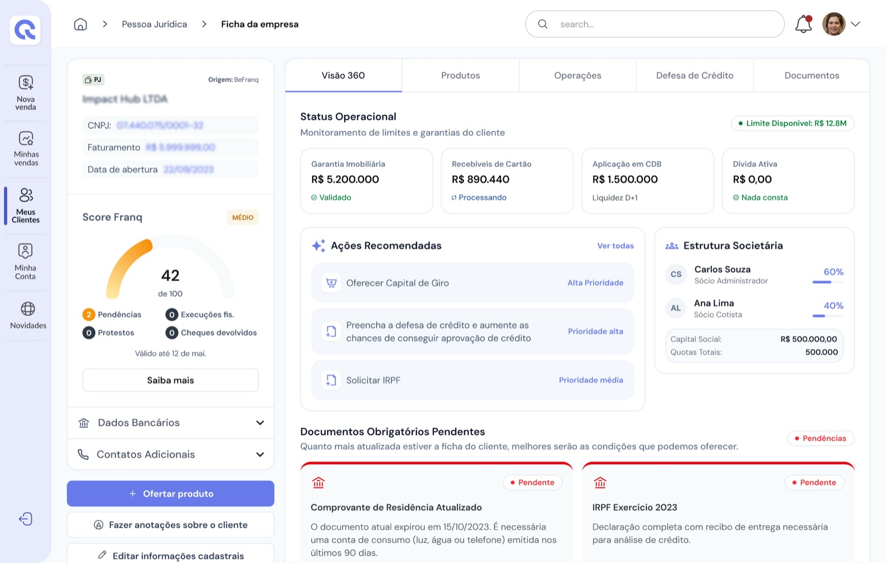
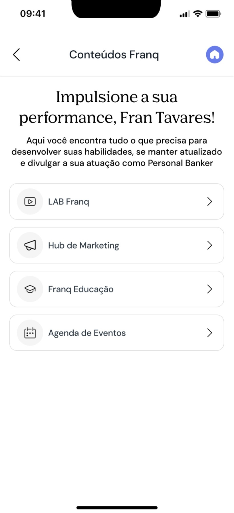
Quatro projetos, uma plataforma
Ficha do cliente PJ
A Ficha do Cliente PJ é onde o PB acompanha score, documentos e produtos elegíveis de cada empresa. Uma visão estratégica do relacionamento, não apenas uma lista de dados.
PROBLEMA
A ficha concentrava diagnóstico, documentos e ofertas em três colunas fixas. O PB rolava a página inteira para achar uma informação, sem saber o que era prioridade.
SOLUÇÃO
Cinco abas, cada uma respondendo a uma pergunta do PB, com envio e visualização de documentos em modais, sem sair da tela.
MEU PAPEL
Levantamento com usuários e stakeholders, arquitetura da informação, protótipo de todos os estados e redesenho dos fluxos de documentos.
Antes e depois
A versão antiga concentrava tudo em três colunas fixas: diagnóstico, lista de documentos e ofertas, sem organização por contexto de uso.
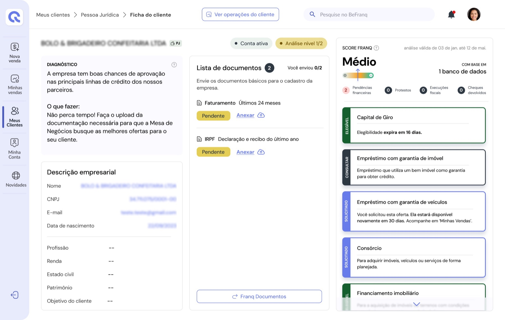
ANTESDEPOISCinco perguntas, cinco abas
Um levantamento com PBs e CSs mostrou as tarefas mais frequentes. Cada uma virou uma pergunta, e cada pergunta, uma aba.
Como está este cliente hoje?
→Visão 360O que posso oferecer?
→ProdutosO que já está em andamento?
→OperaçõesComo aumentar as chances de aprovação?
→Defesa de CréditoQuais documentos já foram enviados?
→Documentos
Navegue pela ficha
O painel lateral com os dados da empresa e o score fica fixo enquanto o PB troca de aba.
Visão 360: score, pendências e estrutura societária em um único painel
Resultado
- Pergunta antes de layoutOrganizar pela pergunta do usuário, não pelo tipo de dado.
- Contexto fixo, tarefa variávelO painel lateral mantém o cliente à vista enquanto o PB troca de aba.
- Modal quando a tarefa é curtaAnexar um documento não deveria tirar ninguém da ficha.
- Ouvir quem usa todo diaPBs e CSs sabiam onde a ficha atrapalhava antes de qualquer métrica.
Gestão de comissões
A tela Meus Ganhos é onde o Personal Banker acompanha o pipeline das suas vendas em Kanban. O redesenho responde a uma pergunta: em que etapa está o meu pagamento?
PROBLEMA
A tela era densa, pouco escaneável e não comunicava o status de cada negócio. Sem entender em que etapa estava o pagamento, o PB recorria ao suporte.
SOLUÇÃO
Cards com hierarquia clara, status com cor e texto, filtros no topo, demonstrativo mais acessível e uma versão em lista como alternativa ao Kanban.
MEU PAPEL
Análise das queixas e do uso da tela, wireframes de validação, interface final, variações responsivas e documentação de componentes.
Antes e depois
Parti das principais queixas dos usuários e do uso real dos filtros e das informações de cada card.
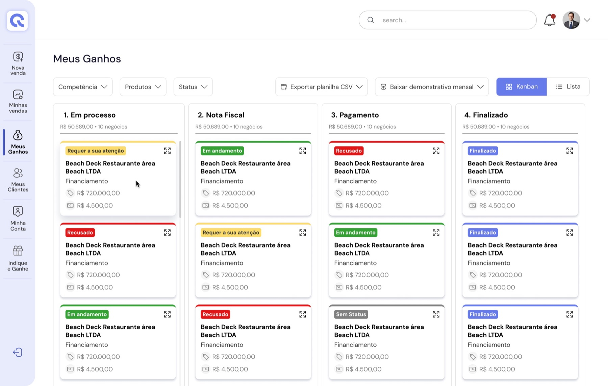
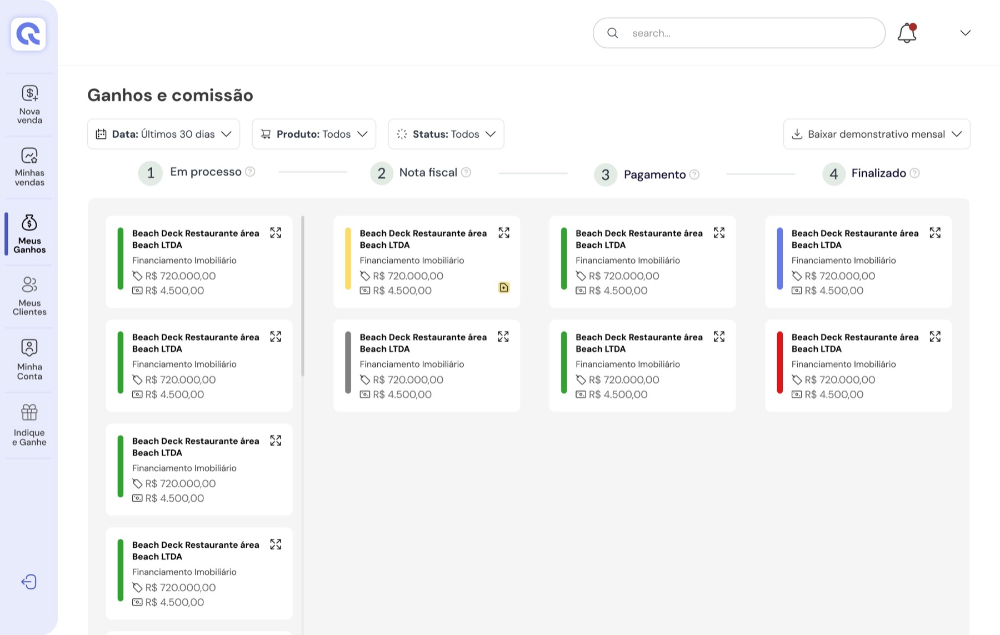
ANTESDEPOISStatus que se leem de relance
Cada venda passa por quatro etapas, e o status sempre traz texto junto da cor, para funcionar também para quem não distingue as cores.
Kanban e lista
Além do Kanban, uma versão em lista mostra status, cliente, categoria, valor bruto, comissão, data e etapa, para o PB escolher a visão que serve ao seu fluxo.
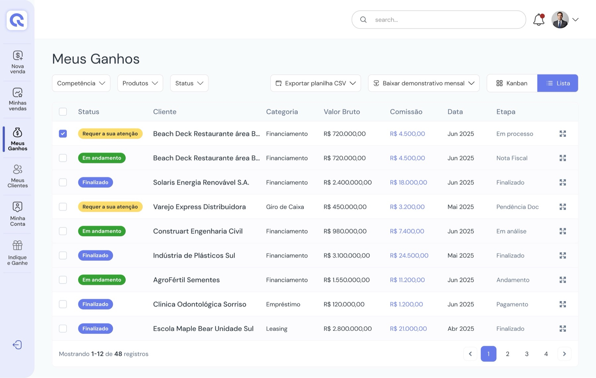
Resultado
- Status é a informação principalEm tela de pagamento, a primeira pergunta é "em que etapa está?".
- Wireframe economiza discussão de visualValidar a hierarquia antes evita retrabalho.
- Duas visões, o mesmo dadoKanban para acompanhar o fluxo, lista para conferir valores.
- Chamado de suporte é pesquisaAs dúvidas mais frequentes mostraram o que a tela não estava dizendo.
Contratação de planos
Uma nova experiência para apresentar os planos da Franq, próxima o bastante de um produto real para ser explorada e validada com usuários antes do desenvolvimento.
PROBLEMA
Apresentar os planos de forma clara e orientada à conversão, e validar a experiência com usuários reais antes de investir em desenvolvimento.
SOLUÇÃO
Um protótipo navegável construído com apoio de IA, com hero animado pelo scroll, apresentação progressiva dos planos e uma régua lateral de progresso.
MEU PAPEL
Definição da experiência e da interface, construção do protótipo funcional com apoio de IA e validação com usuários.
Uma jornada em cinco momentos
Os planos aparecem de forma progressiva, para o usuário entender a proposta antes de chegar à decisão.
Um hero que usa o scroll
Conforme a pessoa rola, a imagem, os títulos e o conteúdo mudam de posição e escala, fazendo a passagem da apresentação para a seção de planos. O movimento tem função, não é só efeito.
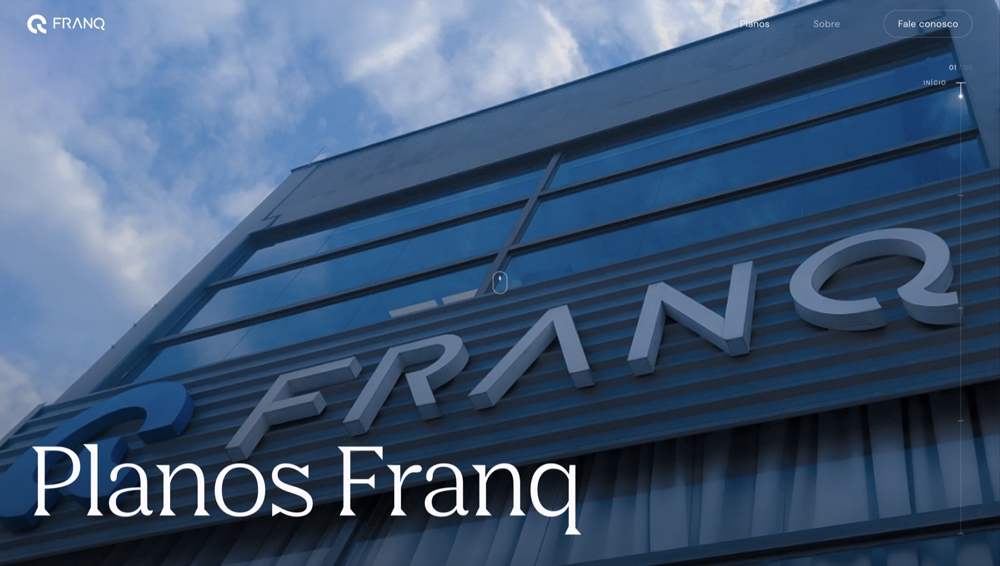
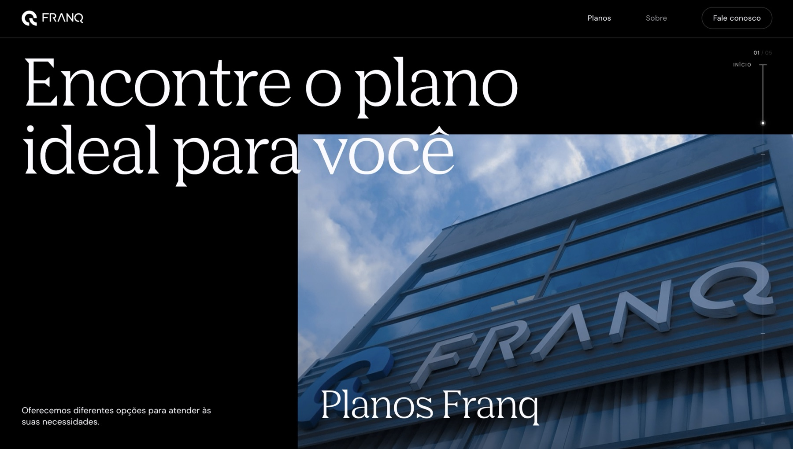
Da apresentação à decisão
Plano Anual e Plano Mensal, com características, benefícios, valores e chamadas para ação.
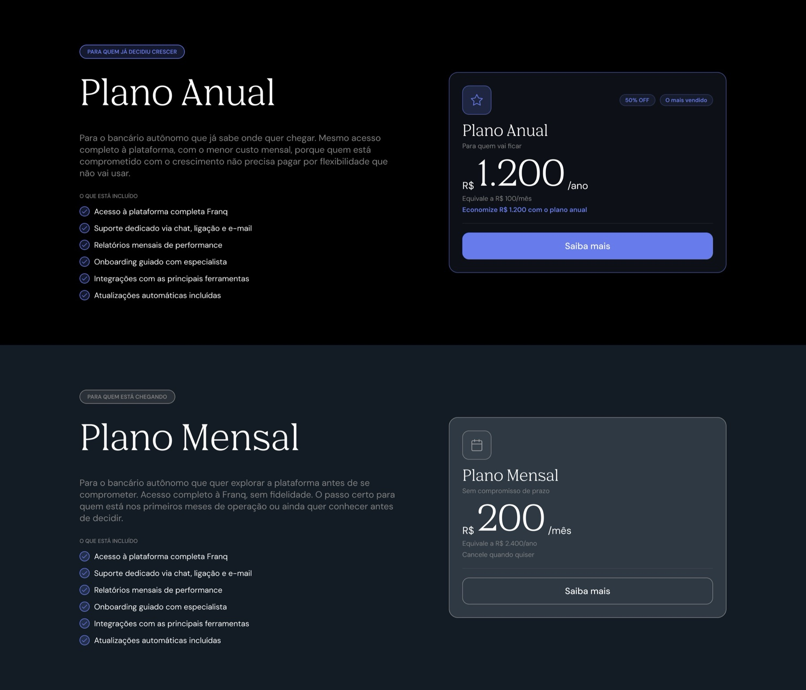
Sobre o conteúdo apresentado. Os textos, valores e benefícios dos planos são fictícios, porque a empresa não autorizou a divulgação da oferta real. A estrutura, a hierarquia e as decisões de experiência são as do projeto original.
Aprendizados
- Protótipo é ferramenta de pesquisaQuanto mais próximo do real, mais real é a reação do usuário.
- Movimento precisa ter funçãoO scroll do hero conta a passagem da apresentação para a decisão.
- Validar antes de construir sai mais baratoAjustar um protótipo custa menos que refazer código.
- IA acelera, o design decideA ferramenta encurta o caminho; hierarquia, conteúdo e fluxo continuam sendo decisões de design.
Franq Educação
A plataforma de capacitação dos Personal Bankers reúne conteúdos, aulas, workshops e materiais de apoio numa única jornada de aprendizagem, na web e no app.
PROBLEMA
Conteúdos, aulas, atividades e eventos ao vivo aconteciam em ferramentas diferentes, sem um lugar que os conectasse. Era difícil saber onde se estava e qual o próximo passo.
SOLUÇÃO
Trilhas de aprendizagem, aulas, atividades com feedback por questão e agenda de eventos integrada ao Zoom, com a mesma arquitetura na web e no app.
MEU PAPEL
Arquitetura da experiência, mapeamento de touchpoints, fluxos, interfaces web e mobile e padrões de navegação e componentes.
Uma jornada só
Cursos na web e no app
A trilha mostra onde o usuário está e qual é o próximo passo. No app, a aula abre em bottom sheet.
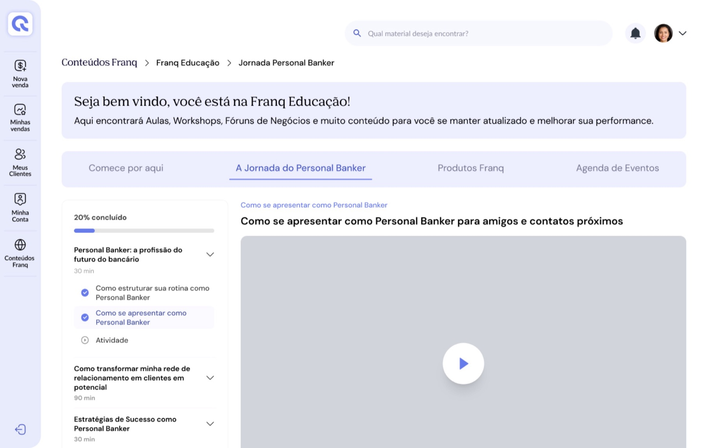
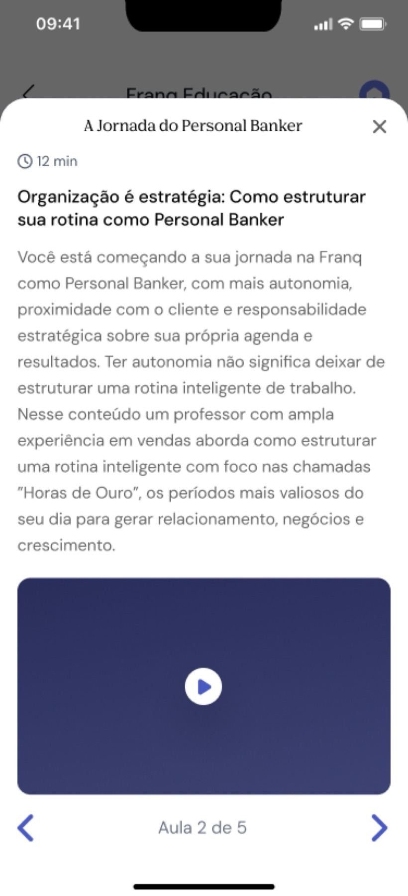
Atividades com feedback
Múltipla escolha com feedback por questão: mais do que dizer se acertou, explicar a resposta faz parte do aprendizado.
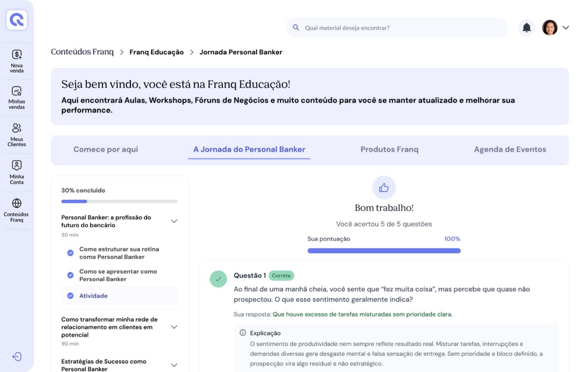
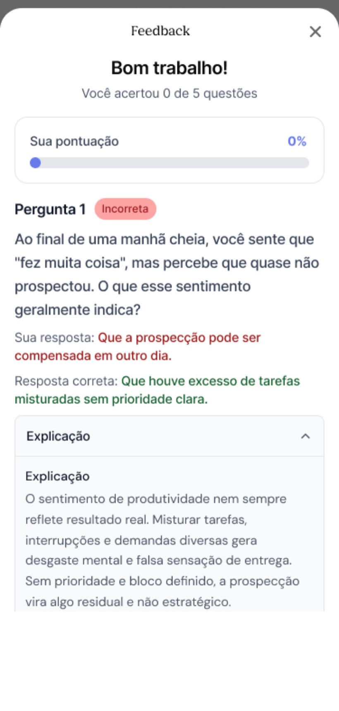
Eventos ao vivo
Descoberta, inscrição e participação no workshop acontecem na plataforma, com o Zoom integrado à experiência.
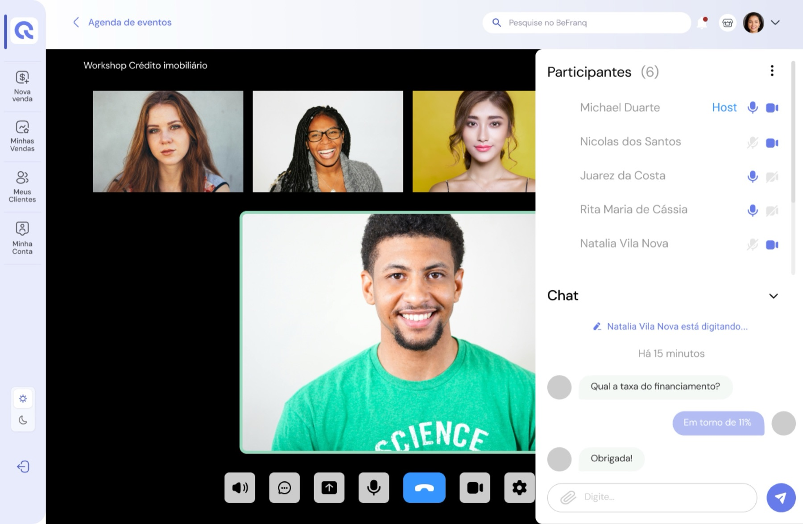
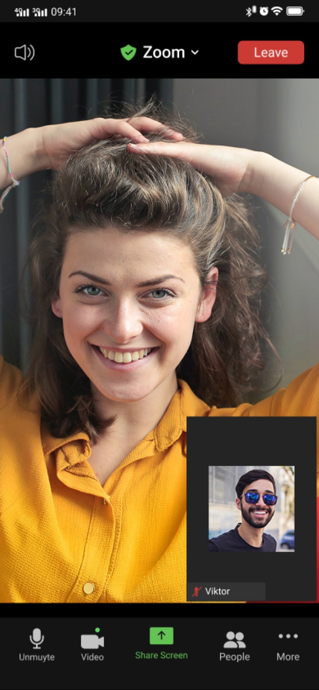